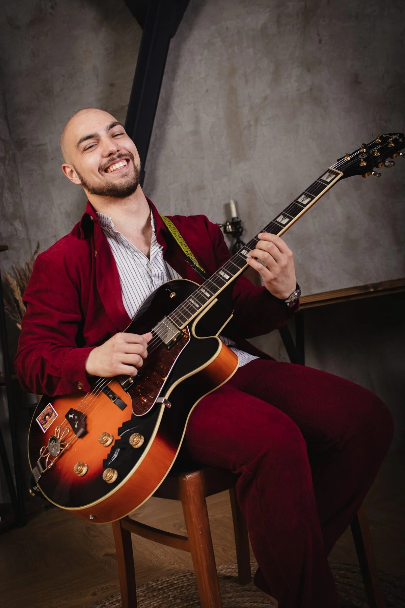
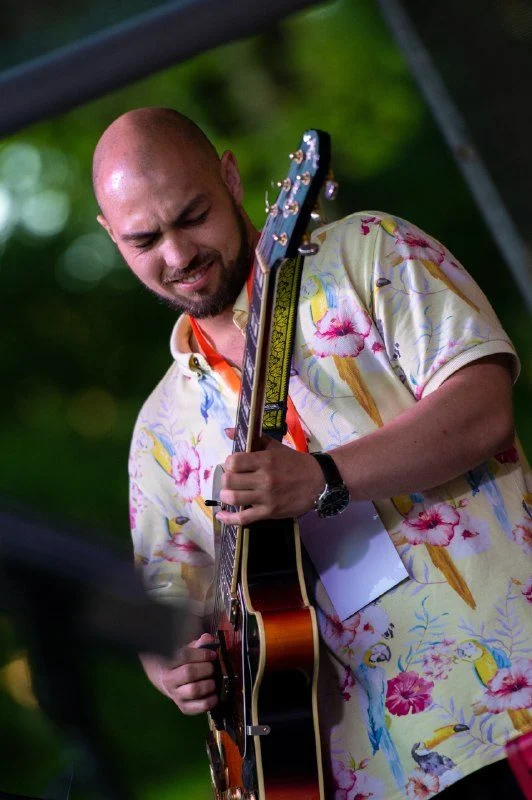

Гармония
Первые ii–V–I
Услышим связь аккордов и попробуем построить на них свою мелодию.
Если уже играешь базовые аккорды
Посмотреть программуГитарист, композитор, преподаватель
Играю джаз и босса-нову.
Преподаю гитару онлайн и готовлю авторские курсы.

Гармония, импровизация и босса-нова. Выбери, над чем хочешь поработать со мной.
Готовлю к запуску
Программы пока предварительные
Гармония
Услышим связь аккордов и попробуем построить на них свою мелодию.
Если уже играешь базовые аккорды
Посмотреть программу
Импровизация
От подбора на слух к собственным фразам и соло.
Если уже играешь мелодии или соло
Посмотреть программуАккомпанемент
Соединим бас и аккорды в рисунок правой руки.
Если меняешь аккорды в ровном пульсе
Посмотреть программуРасскажи, что уже получается и что хочется освоить.
Тебе может подойти курс «Первые ii–V–I»
Связь аккордов, движение голосов и короткая музыкальная фраза.Даты старта, формат и стоимость опубликую, когда программы будут готовы.
Открытое упражнение · SkillDrill
В SkillDrill я показываю короткие упражнения и объясняю, как их использовать. Это — на независимость пальцев левой руки.
Смотреть упражнение в TelegramНезависимость пальцев
Обрати внимание на движение пальцев в видео.
Играй медленно, слушая каждую ноту.
Сохраняй ровный звук при смене пальцев.
Видео около минуты. Понадобится только гитара.
Индивидуально · по видеосвязи
Занимаемся один на один, с учётом твоего опыта и музыки, которую ты хочешь играть.
Можно начать с первых аккордов или разобрать конкретную композицию, поработать над слухом, ритмом и импровизацией. Расскажи, что уже умеешь и что пока не получается.
Время, стоимость и платформу для видеосвязи согласуем в переписке.
Для меня джаз — это в первую очередь мышление
Я гитарист, композитор и преподаватель. Играю джаз, фанк, фьюжн и босса-нову. Для меня важны живой звук, взаимодействие на сцене и свобода импровизации.
Учился у Германа Мамаева и участвовал в его музыкальных проектах. Выступал с Magistrophonic на фестивале «Платформа» и играл на SandlerFest 2025.
Послушать мою музыкуЗаписи выступлений и импровизации с музыкантами, с которыми я играю.
Живая импровизация · Rutube
Играем в трио. Послушай нашу живую запись.
Послушать триоRoll Over Bossa Nova · Telegram
Гитара и тромбон. Играем музыку Антониу Карлоса Жобима в Клубе Ивана Смирнова.
Смотреть концертный фрагментПопробуй на слух
Послушай Dm7, G7 и Cmaj7. Это последовательность ii–V–I, которая часто встречается в джазе.
Обрати внимание на верхнюю ноту: фа → фа → ми. При переходе к Cmaj7 она опускается на полтона. Так можно услышать разрешение напряжения.
Это синтезированный учебный пример, не запись моей гитары. Нажми на аккорд или кнопку, чтобы послушать.
Звуки снизу вверх: выбери аккорд
Нажми на аккорд отдельно или послушай всю связку.
Стандартный строй: ми–ля–ре–соль–си–ми. Струны от шестой к первой. × — не играть. Числа — лады.
G7/D — аккорд G7 с нотой ре в басу. Играй медленно, слушая каждый голос. Сначала спой верхние ноты, затем найди их на грифе.
Новые даты выступлений опубликую здесь. За текущими анонсами следи в моём канале.
Анонсы в TelegramПригласить меня выступитьДелюсь записью Roll Over Bossa Nova в Клубе Ивана Смирнова. Этим московским концертом мы открыли наш тур.
Посмотреть записьНебольшой фрагмент моей работы в студии.
Открыть публикациюФотографии моего выступления на фестивале «Джазовые выходные в Гатчине».
Смотреть фотографииОтветы на вопросы перед тем, как написать мне.
Выбери тему «Онлайн-занятия» в контактах и напиши мне во ВКонтакте. Расскажи о своём уровне и задачах, укажи часовой пояс и удобное время. Стоимость, расписание и платформу для видеосвязи обсудим в переписке. Запись подтвержу лично.
Да, можем начать с первых аккордов. Расскажи мне о своём инструменте и о музыке, которую хочешь играть. А для курсов ii–V–I, импровизации и босса-новы уже понадобятся базовые навыки.
Следи за анонсами в моём Telegram-канале. Записи и фотографии прошлых выступлений собраны в разделе «Концерты».
В контактах выбери «Выступление на мероприятии». Напиши мне дату, город, площадку и желаемый формат выступления. Обсудим программу и условия.
Я ещё готовлю курсы. Пока можно посмотреть предварительные программы и написать мне о своём интересе. Даты, формат и стоимость опубликую перед запуском. Оплата на сайте пока не открыта.
Обсудим занятия, выступление или совместный проект. Связаться со мной можно во ВКонтакте.
С чего начнём?
Написать мне во ВКонтактеСкопируй текст и отправь мне во ВКонтакте. Сайт не отправляет сообщения. Запись на занятие подтвержу в переписке.